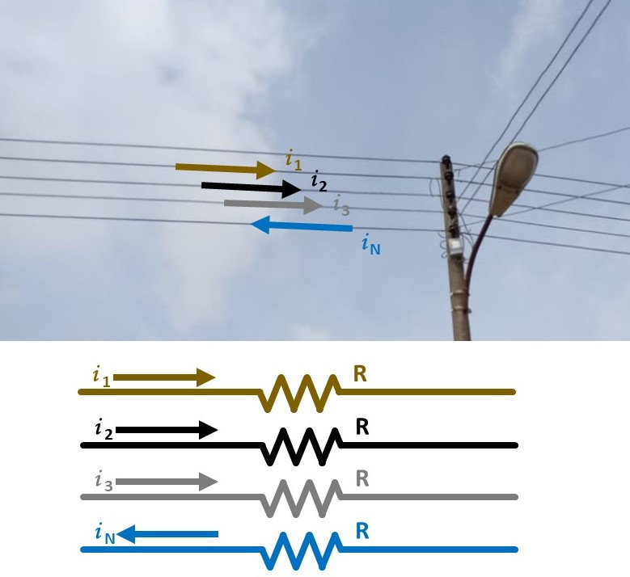
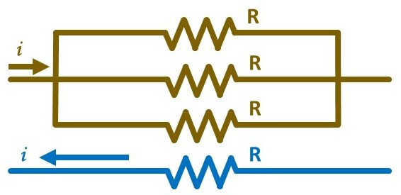
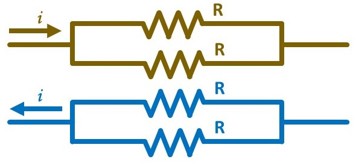
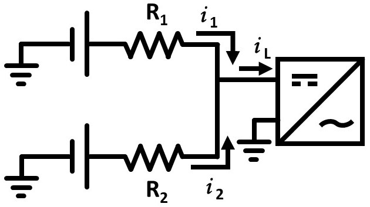

I2R Losses in Single- and Three-Phase Distribution Networks
Posted on March 4, 2023 • 15-minute read
Contents
Introduction
Power line losses are a significant concern in mini-grid systems. These losses not only impact the efficiency and reliability of the system, but also increase the overall cost of electricity for end-users. One of the key factors that contributes to power losses in distribution networks is load unbalance. When loads are unevenly distributed across the phases of a three-phase network, the resulting current imbalance can cause additional losses in the system.
In this essay, we will explore the impact of load unbalance on power losses in both three-phase and single-phase distribution networks for mini-grids. Specifically, we will answer the question: "How unbalanced do loads on a three-phase distribution network have to be to warrant reconfiguring the network to be single-phase?" By analyzing the theoretical and practical implications of load unbalance, we will gain insights on the most optimal configuration for mini-grids in terms of minimizing power losses and improving energy efficiency. This analysis will help mini-grid operators and designers make informed decisions about the configuration of distribution networks, ultimately improving the quality and affordability of electricity for end-users.
I2R Losses in a Three-Phase Distribution Network
Consider a three-phase AC distribution network in a wye configuration with four cables: Line 1, Line 2, Line 3, and Neutral. Assume each conductor has the same resistance, \(\mathrm{R} > 0\), and each of the three lines, \(k\), is supplying a load with current \(i_k \geq 0\). The current flowing back to the source along the neutral is:
The power lost along a conductor due to the current, \(i\), being impeded by resistance \(\mathrm{R}\) is given by
Therefore, the power loss in the above three-phase network is given by the sum of the power losses along each line:
Reconfiguring for Single-Phase Distribution
Now consider a single-phase distribution network made by connecting Lines 1, 2, and 3 of the above three-phase network. Lines 1, 2, and 3 now act as a single conductor with resistance \(\mathrm{R}/3\) carrying current \(\sum_{k=1}^3 i_k\). Assuming the AC power source was reconfigured to output single-phase AC along the three conductors, Kirchhoff's Current Law dictates the current along the neutral is equal to the current along the new, combined line:
Applying Eq. (3), the power loss in this single-phase network can be expressed:
If \(\mathrm{P}_{1\mathrm{p}}< \mathrm{P}_{3\mathrm{p}}\), then total power loss would be reduced by reconfiguring the original three-phase network to be single-phase using the method described above. This occurs when:
Defining Balance
Note that the above inequality has no dependence on resistance \(\mathrm{R}\) if \(\mathrm{R}\neq 0\). We can define a unitless measure, \(\beta\), to quantify how well the load is balanced in the three-phase network:
When the loads are perfectly balanced, i.e. \(i_1=i_2=i_3\), \(\beta=1\), and as the currents become further from equal, \(\beta\) decreases to \(0\). Note that \(\beta\in [0,1]\ \forall i_1,i_2,i_3\geq 0\).
Rewriting Eq. (6) assuming that at least one of the currents is nonzero yields \(\beta < 2/11\). Therefore, it can be said that, if the loads are unbalanced such that \(\beta < 2/11\), the line losses in the above single-phase distribution network would be less than those in the original three-phase network.
Optimizing the Single-Phase Distribution Network
Now consider a single-phase distribution network that has been optimized by moving the load originally on Line 3 to Line 1 or 2, then connecting Line 1 to Line 2 and Line 3 to Neutral. Thus, we have a single-phase network with current \(i_{1\mathrm{p}^*}=\sum_{k=1}^3 i_k\) and total resistance \(\mathrm{R}\). Applying Eq. (2), we can compute the power line loss for this new network:
If \(\mathrm{P}_{1\mathrm{p}^*} < \mathrm{P}_{3\mathrm{p}}\), then total power loss would be reduced by reconfiguring the original three-phase network into the optimized single-phase network. This occurs when:
or \(\beta < 1/3\).
Extension to Energy
Redefine current \(i\) to be a function of time, \(t\): \(i(t)\). Thus, the currents \(i_1\), \(i_2\), and \(i_3\) are now functions of time: \(i_1(t)\), \(i_2(t)\), and \(i_3(t)\). Substituting \(i(t)\) into Eq. (2) similarly redefines power loss to be a function of time as well:
The energy lost due to power line losses \(\mathrm{P}(t)\) between times \(0\) and \(\mathrm{T}\) is:
Applying Eq. (11) to Eqs. (3), (5), and (8), we can compute the energy lost due to power line losses between times \(0\) and \(\mathrm{T}\) for the three-phase, single-phase, and optimized single-phase networks, respectively, as:
Just as with the power inequalities, if \(\mathrm{E}_{1\mathrm{p}} < \mathrm{E}_{3\mathrm{p}}\) or \(\mathrm{E}_{1\mathrm{p}^*} < \mathrm{E}_{3\mathrm{p}}\), reconfiguring the network from three-phase to single-phase or optimized single-phase, respectively, would reduce energy loss during the period from time \(0\) to \(\mathrm{T}\). As an example, consider the comparison of the three-phase system to the optimized single-phase system:
Note that, as before, the inequality does not depend on resistance \(\mathrm{R}\) and can be summarized using a single, unitless measure:
Rewriting the energy inequalities using \(\Beta\) yields the same numeric cut-offs for \(\Beta\) as \(\beta\):
- If \(\Beta < 2/11\), the energy lost due to power line losses between times \(0\) and \(\mathrm{T}\) would be reduced by reconfiguring the three-phase system as a single-phase system.
- If \(\Beta < 1/3\), the energy lost due to power line losses between times \(0\) and \(\mathrm{T}\) would be reduced by reconfiguring the three-phase system as an optimized single-phase system.
The discrete-time approximation of \(\Beta\) can be computed with Riemann sums:
where \(\Delta t(t_\tau)\) is the sampling period at time \(t_\tau\), the time at sample \(\tau\in \{1, 2, ..., \mathrm{M}\}\), such that \(t_1=0\) and \(t_\mathrm{M}=\mathrm{T}\), where \(\mathrm{M}\) is the number of samples. Note that \(\Delta t\) need not be constant over time. The cut-off values of \(2/11\) and \(1/3\) do not change.
Developing an Intuition
Without loss of generality, let Line 1 carry the largest load, i.e. \(i_1\geq i_2\) and \(i_1\geq i_3\). Scale the loads on Lines 2 and 3 to be expressed as a fraction of the load on Line 1, i.e. \(0\leq i_2/i_1\leq 1\) and \(0\leq i_3/i_1\leq 1\). We can use these two scaled currents, \(i_2/i_1\) and \(i_3/i_1\), to visualize the domain of relative loads for which a single- or three-phase network would minimize line losses. The above figure illustrates this.
The amount of load imbalance required for the line losses of a single-phase distribution network to be less than those of a corresponding three-phase network is significant. For example, if the load on Line 2 is 40% of the size of the load on Line 1, even a system in which there was no load on Line 3 would still have less line losses with a three-phase distribution network than a corresponding single-phase network.
For most distribution networks, three-phase networks will usually be more efficient at reducing I2R losses than single-phase networks. In three-phase networks, the neutral conductor carries only the unbalanced current, which is typically smaller than the currents in the lines. In a single-phase distribution network, there is no balancing of loads, so the current flowing along the return path must be equal to the current flowing along the line. The only time line losses are reduced by reconfiguring a three-phase network into a single-phase network is when the benefit gained from the neutral conductor in a three-phase network carrying only the unbalanced current is outweighed by the additional resistance on the lines from not combining them into a single conductor. From Eq. (9), this only happens when \(\beta < 1/3\). Even for Renewvia's smaller networks that are harder to consistently balance, \(\beta\) tends to be greater than 0.5, and \(\Beta\) tends to be greater than 0.7, significantly greater than the cut-off value of 1/3.
Additional Considerations
This essay has only addressed the question of when the line losses of a three-phase distribution network are greater than those of a single-phase network with the same four conductors. However, several additional considerations exist when considering which system will lead to a more efficient mini-grid. For example, in the power house, batteries are often bussed to enable equal current draw from each module. Battery inverters and charge controllers are connected to the DC bus rather than directly to individual batteries. For most calculations, bus bars are considered to have negligible resistance. However, in three-phase systems, different battery inverters are responsible for different phases, so the resistances between one battery and different battery inverters can be different.
Consider the above diagram of two batteries connected to one of the battery inverters in a three-phase system. For simplicity, assume this system has only three battery inverters, one for each phase, and only one of the battery inverters is currently outputting power to a load. The ratio of the current output of the two batteries is inversely proportional to the ratio of the resistances between the batteries and the inverter:
Note that, even if the bus bar resistance is small, the ratio of the currents depends only on the ratio of the resistances. Thus, if there is twice as much conductor between the battery inverter and the first battery as between the battery inverter and the second battery, then the second battery will drain twice as fast as the first. If this condition persists, because the batteries are bussed, current will eventually flow from the first battery to the second due to the drop in battery voltage as state-of-charge decreases. This flow will likely overload its battery fuse due to the low absolute resistance between the batteries on the bus bar. Therefore, even though the I2R losses of a three-phase network may be less than those of a single-phase network, the additional OPEX required to replace the battery fuses in an unbalanced three-phase system should be considered.
From a design perspective, most single-phase distribution networks have only two conductors: line and neutral. If the mini-grid distribution network is not already built, the distribution engineer must consider the additional CAPEX involved with running two additional conductors. However, a single-phase network with only two conductors will always have line losses greater than or equal to a three-phase network. This can be shown by computing the power loss of said single-phase system to be \(\mathrm{P}_{1\mathrm{p}2}=2\left(i_1+i_2+i_3\right)^2\mathrm{R}\) and noting that \(\mathrm{P}_{1\mathrm{p}2} < \mathrm{P}_{3\mathrm{p}}\) if and only if \(i_1i_2+i_1i_3+i_2i_3 < 0\) or \(\beta < 0\), which is impossible for nonnegative currents. It is perhaps easier to inspect that, in the worst case of only one line in a three-phase network being loaded, the three-phase network is acting as a single-phase network.
Other considerations include:
- The CAPEX of any additional battery inverters necessary for a three-phase network
- The superior efficiency of three-phase diesel backup generators compared to single-phase ones
- The ability to use battery inverters of single-phase systems to collaborate to fulfill the total load
- The existence of three-phase loads, which may require the purchase of additional transformers if the grid is single-phase
- Three-phase systems with only one battery inverter per phase have no backup mechanisms in the event that a battery inverter fails